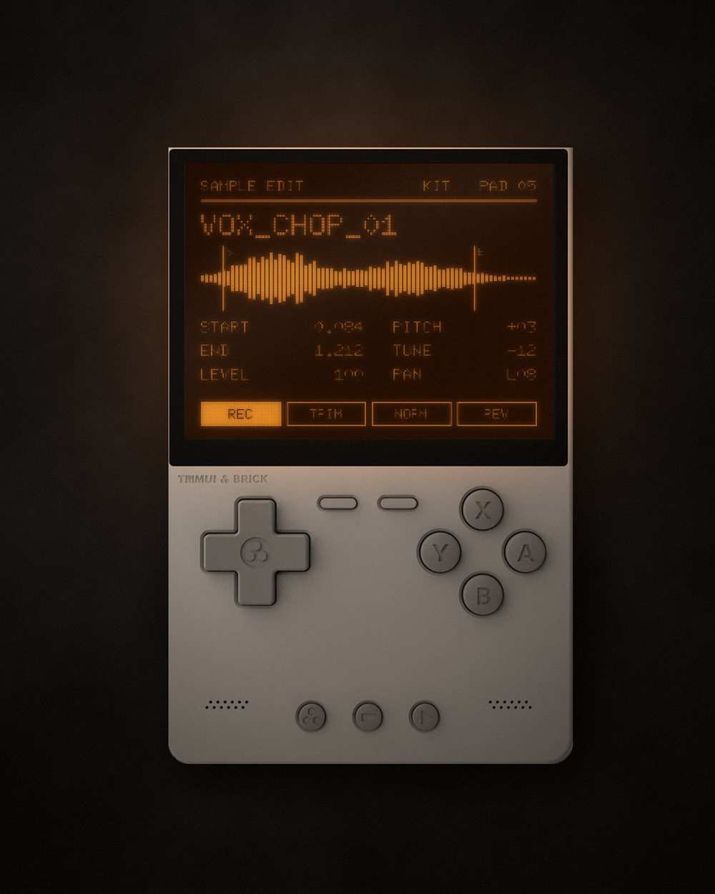

BRICKSAMPLER
v2.0 · FreeAn 80s/90s-style sampler. Record from USB or the mic, loop and chop what you caught, play it from 16 pads or across a keyboard, and build wave sequences from your own sounds. 8 ms from key to sound.
See BrickSampler